ROG Citadel XV (2020)
- virtual showroom that transforms into a fast-paced FPS experience -
Overview
ROG Citadel XV started as an interactive virtual showroom for ASUS ROG hardware and grew into a full FPS game experience with collectibles, DLC, and mini-games, designed to reward exploration while showcasing products in context. Back in 2020 when the covid changed how people interact with each other physically, all exhibition was cancelled and this project was intended to provide an experience that gives its audiences a chance to celebrate the latest products in their own comfortable home. With the possibility of reaching their core audiences, ASUS ROG decided to upgrade it into a series of mini-games set in their ROG universe.

My Role
As Game Director and Art Director, I shaped the overall concept, gameplay flow, project scope and production roadmap, while defining the visual identity, environment mood, product presentation and UI/UX. I design and supervised level design, art assets, animation, UI, VFX, and QA to keep gameplay, visual and branding aligned.
Highlights
- Design the hybrid experience that functions as both a showroom and a full FPS game.
- Direct and supervised multiple chapters, DLC, and mini-games that delivered within a unified art direction.
- Strong integration of ROG product storytelling and visual into environmental and gameplay beats.
- Design and set the artistic look and feel of all the assets including environments, concepts, lightings, product presentation/animation, UI/UX.
- Built in Unity Engine with optimization for wide PC hardware configurations.
- Worked with programmers to deliver all the required features and set the guidelines for each deliveries.
Art & Process
The Idea
This project began with a bold idea: what if ROG fans worldwide could access the latest product information through an interactive game, experiencing it from home rather than at a physical exhibition? The result was ROG CITADEL XV. I served as both Game Director and Art Director, collaborating closely with the Creative Director at ASUS ROG to bring this vision to life and publish the experience on Steam. It was an exciting challenge that combined creative direction, technical execution, and audience engagement into a single, groundbreaking project.


Early Prototype
Before our first meeting, I quickly blocked out the level designs in Maya and created several concept artworks to jumpstart the discussion. This allowed the team to align early on the project’s overall scope, considering the time and resources available. I then transferred the level designs into Unity, where I placed lighting to establish the intended mood and tone, giving the creative director and his team a clear sense of how the final game might flow. The video above was recorded from a prototype we presented during that meeting, which led to the decision to include key spaces such as the showroom, shooting range, elevator (show hangar), and Omni’s room.
Showroom
The centerpiece of the first ROG CITADEL XV experience was the central control room, designed to deliver a showroom atmosphere reminiscent of a high-end exhibition. As Art Director, I began by blocking out the overall structure of the space, collaborating closely with our concept artist to finalize the visual direction before moving into modeling and texturing. A significant portion of my effort was dedicated to the room’s complex lighting design. I approached the use of red—the ROG signature color—with particular care, as its intensity can easily overwhelm a scene or create an unintended sinister tone. To balance this, I relied heavily on indirect lighting, which not only softened the palette but also enhanced the futuristic and mysterious ambiance of the environment.
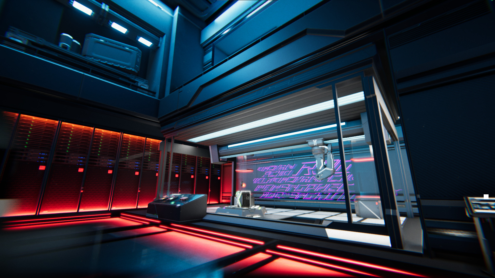
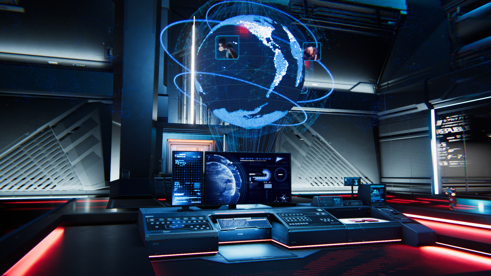
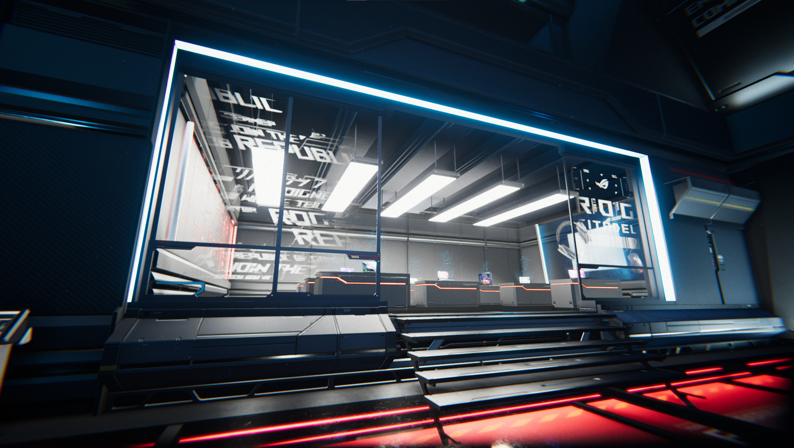
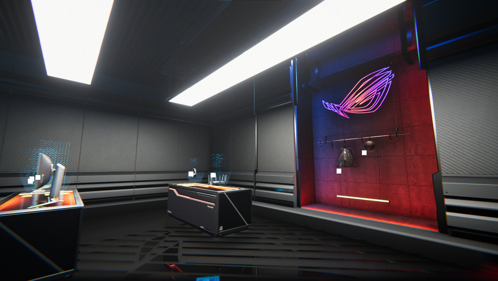
Shooting Range
I designed the shooting range as a traditional gun range enhanced with subtle sci-fi elements. Since many of our audience members might not be familiar with the FPS genre, the tutorial UI played a crucial role. To make it more engaging, I incorporated video footage demonstrations, which added depth and interest compared to static images. Whenever time and resources allow, I believe tutorials should always feature motion-based guidance, as it creates a far more immersive and effective learning experience.
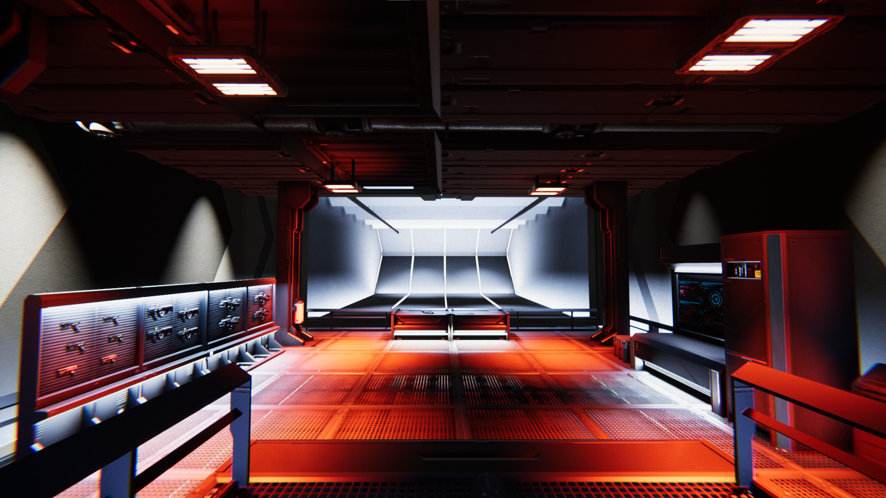
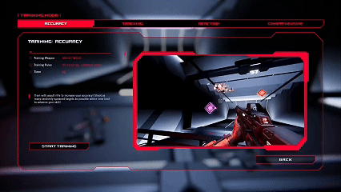
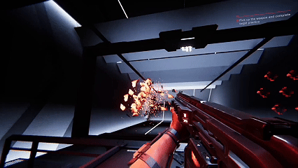
Product Gallery
We spent huge amount of time on the product gallery as it is the main focus for the whole experience. I tried to make sure the product that is presented as realistic and as
beautiful as possible. A lot of effort was invested in the color, lighting, UI, animation and modeling to make sure every single product is perfect but also very consistent across
20+ products of their quality in their presentation. Every animation and VFX was hand-crafted and purposefully directed so the message to the audiences was clear and precise. I worked in Unity for the lighting and materials to make sure the realtime presentation could deliver the best quality that rivals the pre-rendered quality. In the end I am extremely proud of our team that made this showroom an amazing experience.
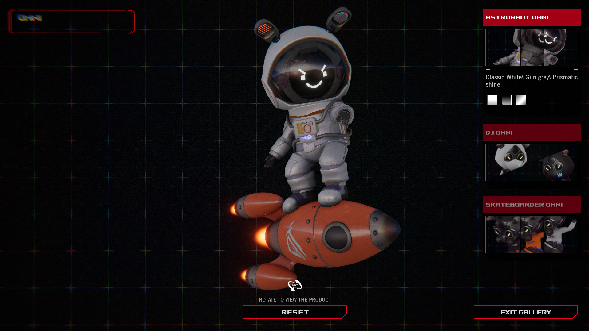


Omni's Room
The first room created for the project marked the starting point of the journey—the tutorial stage. I designed this space to feel cozy and livable, imagining it as the home of a robot with a fascination for weapons. A strong emphasis was placed on lighting, crafted to deliver a sense of realistic illumination that not only grounded the environment but also set the tone and visual style for the experience moving forward.
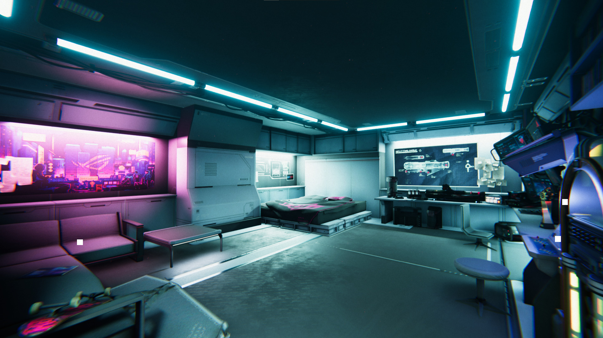
UI Design
Since ASUS ROG already had an established visual style guide, I followed it closely when designing the UI elements for the project. At the same time, I developed additional design directions to ensure the overall UI experience remained consistent on PC. I worked closely with our UI designer for the final refined look. Personally, I favor a minimalistic approach, so I worked to strike a balance between clarity and simplicity while incorporating a futuristic sci-fi aesthetic. Beyond the core UI, I also created numerous in-game art assets that adhered to the same visual language, serving as cohesive filler elements that enhanced immersion and reinforced the overall design identity.
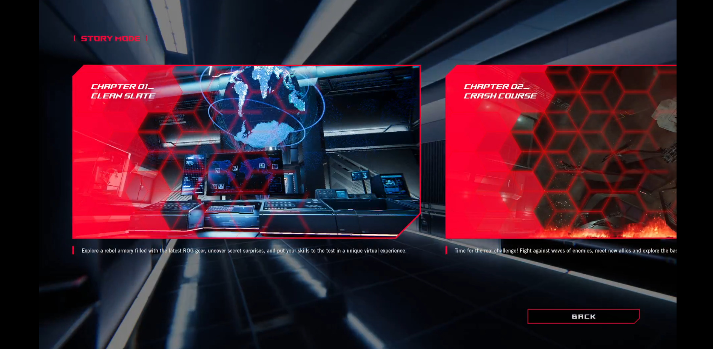
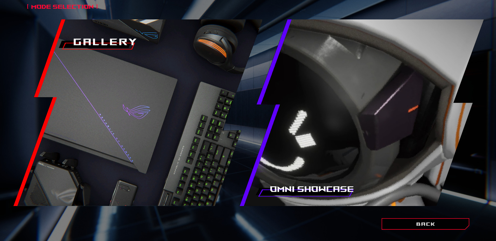
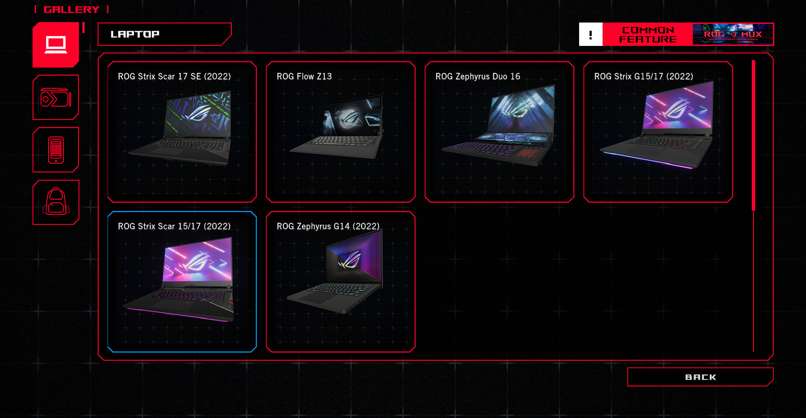
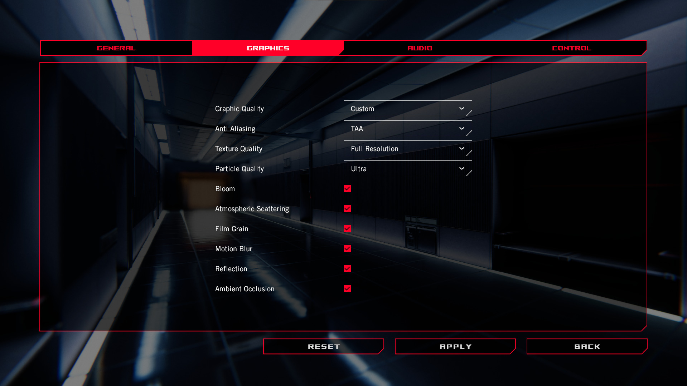
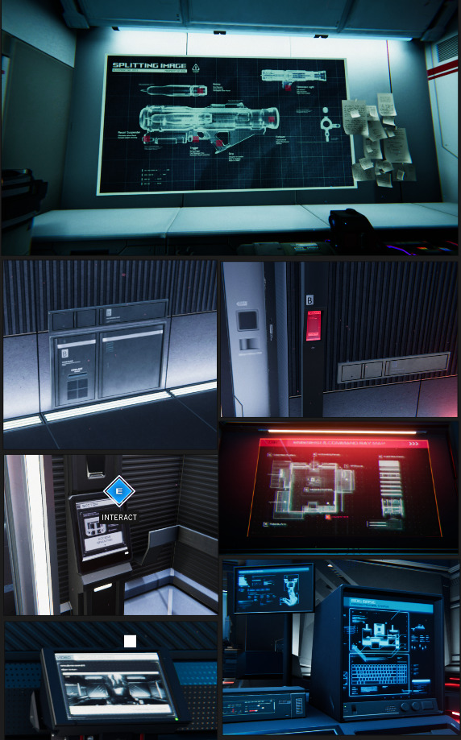
Closing
This was a large-scale project, yet the team worked with very limited resources for the initial delivery. As Art Director, I gained invaluable experience in coordinating across departments and artists to ensure coherence, efficiency, and consistency in the visual output—spanning modeling, products, textures, characters, and UI.
I learned that the most critical skill of an art director is the ability to communicate with precision and provide clear, actionable direction during reviews. When work fell short of expectations, it was essential to define exactly what was lacking and specify how to improve it, often supported by reference images or diagrams to strengthen clarity.
Establishing strong guidelines and standards before production proved equally important, as they prevented confusion and kept the workflow organized in a fast-moving environment.
Despite the challenges, I am extremely proud of both my contributions and the team’s dedication, as everyone gave their absolute best to bring this project to life.
Gallery
{kind=link}
{kind=link}
{kind=link}
{kind=link}
{kind=link}
Project Details
Role: Game Director, Art Director
Type: Game / Virtual Showroom
Year: 2020
Client: ASUS ROG
Tools & Tech: Unity Engine, in-house tools, version control